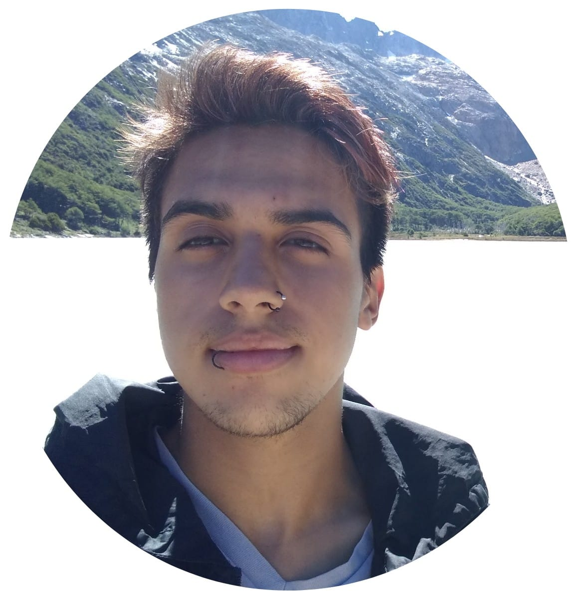

Agustin Manuel Ojeda

Perfil Personal
Gran motivación para seguir perfeccionando habilidades y crecer profesionalmente. Espero poder trabajar en un ambiente con compañerismo y aprender cosas nuevas que me sirvan a futuro.
Educación
- Técnico Químico. Graduado en la E.E.S.T. N°3
- Nivel de Ingles: Intermedio.
- Participante de multiples actividades extracurriculares, como las olimpiadas de química y el simulacro de ONU, ademas de estar en proyectos de Escuelas Solidarias (analisis químicos de Arroyo la Tapera y limpieza del mismo en la ciudad de Mar del Plata).
Experiencia Laboral
La mayoria de los trabajos y emprendimientos que tuve fueron de atención al publico, ademas de que mi familia tiene una despensa, por ende, desde pequeño vengo desarrollando habilidades en este ambito laboral.
Despensa Familiar
Desde 2014 y aún vigente
- Mantenimiento y organización de productos.
- Contaduria.
- Monitoreo de lo más consumido.
- Cajero.
Chiringos de Varese
De diciembre del 2020 a Febrero del 2021
- Mantenimiento y organización de productos.
- Cocinero.
- Cajero.
- Repositor.
Skills
- Buen compañero con capacidad para trabajar de forma independiente y conjunta.
- Gran rendimiento bajo presión.
- Facilidad para seguir instrucciones y generar resultados de calidad.
- Soy bastante ágil para los programas informáticos, entre ellos, sé utilizar los de Microsft Office(Word, Excel, PowerPoint), Suite Google(Gmail, Docs, Hangouts), AdobePhotoshop y Canva.
Un Poco Mas Sobre Mi
Hobbies
- Aficionado a la música y la astronomia.
- Me encanta leer y aprender cosas.
- Suelo dibujar, escribir historias y poemas.
- Me gusta mucho cocinar.
¿Por qué estoy estudiando programción?
"La verdad es que siempre tuve ese interes por poder programar,
aunque no lo habia intentado hasta ahora.
Me di cuenta de que me es sumamente entretenido hacerlo y en serio lo disfruto,
el poder crear algo informatico desde cero me es tremendo, es todo un nuevo mundo.
Ademas de las oportunidades laborales, y la comodidad de hacerlo donde quieras y
como quieras.
Espero que al finalizar la carrera obtenga todas las herramientas y
conocimiento necesario para comenzar a trabajar".